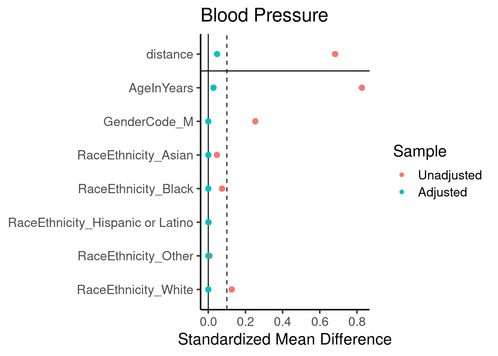

Propensity Mapped Comparason Between Cases and Controls
Author
Dave Bridges and Trey Carr
Published
April 9, 2025
Show the code
# hide this code chunk#| echo: false#| message: false# defines the se functionse <-function(x) {sd(x, na.rm =TRUE) /sqrt(length(x))}#load these packages, nearly always neededlibrary(tidyverse)# sets maize and blue color schemecolor_scheme <-c("#00274c", "#ffcb05")
Purpose
To create a propensity mapped subgroup for lab results.
Data Entry
Show the code
case.demographics.filename <-'CaseDemographics.csv'control.demographics.filename <-'ControlDemographics.csv'case.lab.results.filename <-'LabResults.csv'control.lab.results.filename <-'../controls/LabResults.csv'bp.filename.cases <-'NursingStandardVitalSigns.csv'bp.filename.controls <-'../controls/NursingStandardVitalSigns.csv'case.encounter.datafile <-"EncounterAll.csv"case.encounter.bmi.datafile <-"EncounterAnthropometricsBMI.csv"control.encounter.datafile <-"../controls/EncounterAll.csv"control.encounter.bmi.datafile <-"../controls/EncounterAnthropometricsBMI.csv"library(readr)library(dplyr)#labs dont have dates/agescase.encounters <-read_csv(case.encounter.datafile)case.encounters.bmi <-read_csv(case.encounter.bmi.datafile)case.encounters.all <-left_join(case.encounters,case.encounters.bmi,by =join_by(DeID_PatientID, DeID_EncounterID))control.encounters <-read_csv(control.encounter.datafile)control.encounters.bmi <-read_csv(control.encounter.bmi.datafile)control.encounters.all <-left_join(control.encounters,control.encounters.bmi,by =join_by(DeID_PatientID, DeID_EncounterID))case.demographics <-read_csv(case.demographics.filename)control.demographics <-read_csv(control.demographics.filename)case.labs <-read_csv(case.lab.results.filename) |>left_join(case.encounters.all, by =join_by(DeID_PatientID, DeID_EncounterID)) |>#added encounter infoleft_join(case.demographics, by="DeID_PatientID") # added demographic datacontrol.labs <-read_csv(control.lab.results.filename) |>left_join(control.encounters.all, by =join_by(DeID_PatientID, DeID_EncounterID)) |>#added encounter infoleft_join(control.demographics, by="DeID_PatientID") # added demographic data#remove large objects not needed further#rm(control.encounters,control.encounters.all,control.encounters.bmi)#combined into one datasetlibrary(lubridate)#this is used to filter for the window between when a lab result is allowable relative to the procedure.procedure.result.interval <-30lab.results <-bind_rows(control.labs |>mutate(Cushings=0), case.labs |>mutate(Cushings=1)) |>#combined, new column indicating cushingsmutate(cushings_procedure =ymd(cushings_procedure),DeID_AdmitDate =mdy_hm(DeID_AdmitDate)) |>mutate(TimePoint =case_when(cushings_procedure<= DeID_AdmitDate ~"Before", cushings_procedure > DeID_AdmitDate ~"After",.default="Unknown")) %>%# defined each encounter as before or aftermutate(ProcedureFollowUp = cushings_procedure - DeID_AdmitDate) #used to define point between the lab result and the procedure.#filtered out lab results outside of our intervallab.results.filtered <- lab.results |>filter(ProcedureFollowUp<procedure.result.interval |is.na(ProcedureFollowUp)) |>filter(TimePoint!="After")#filtered out if the age, gender, race, ethnicity was NA for a patient.complete.data.race.ethnicity.age <- lab.results.filtered |>filter(!if_any(c(AgeInYears, GenderCode, RaceCode, EthnicityCode), is.na)) #removed if they had missing data for age, gender, race or ethnicity#this is the complete dataset complete.data <- complete.data.race.ethnicity.age |>mutate(RaceEthnicity =case_when(EthnicityCode=="HL"~"Hispanic or Latino", RaceCode=="C"~"White", RaceCode=="AA"~"Black", RaceCode=="A"~"Asian",.default="Other")) #defined race/ethnicity categories#number of controls per casefold <-10
Note the controls dont have ages or BMIs because it depends on when the lab results were obtained, so had to merge in with encounter data.
Participant Inclusion Data
We began with 70327 controls who had lab data, and 441 cases with Cushing’s Disease.
Had Laboratory Results: We also removed 162 lab results from Cushing’s patients because they were outside of our acceptable window of 30 days before their procedure. This eliminated a total of 2 Cushings patients from our dataset.
Missing Demographic Data After filtering out missing demographic data we had 363 cases and 70070 controls with lab results. The specific pieces of missing information are found here:
Show the code
lab.results.filtered |>filter(Cushings==1) |>#only for cushings datagroup_by(DeID_PatientID) %>%summarise(Age_na =sum(is.na(AgeInYears)),Gender_na =sum(is.na(GenderCode)),Race_na =sum(is.na(RaceCode)),Ethnicity_na =sum(is.na(EthnicityCode)),Any_na =any(is.na(AgeInYears) |is.na(GenderCode) |is.na(RaceCode) |is.na(EthnicityCode))) |>ungroup() |>pivot_longer(cols =ends_with("_na"),names_to ="field",values_to ="has_na") |>filter(has_na!=0) %>%count(field, name ="n_patients_with_NA")-> missing.demographic.summarylibrary(knitr)missing.demographic.summary |>arrange(desc(n_patients_with_NA)) |>kable(caption="Summary of exclusions from Cushing's patient pool due to missing demographic data")
Summary of exclusions from Cushing’s patient pool due to missing demographic data
field
n_patients_with_NA
Any_na
78
Ethnicity_na
74
Gender_na
16
Race_na
16
Age_na
10
Our final dataset therefore included 363 Cushing’s patients, and we had the ability to draw from 70070 Cushing’s patients control patients.
Propensity Mapping
Used the R package mapit to match based on Age, Gender, Race, and Ethnicity. We wanted exact matches for everything except age, where we wanted the closest case that had a measurement. We picked 10 matched controls for each case
library(knitr)hba1c.summary %>%kable(caption="Summary of Hb1ac levels by obesity and pre-existing Cushing's")
Summary of Hb1ac levels by obesity and pre-existing Cushing’s
Cushings
Obesity
mean
se
sd
n
0
Non-Obese
5.501020
0.0616673
0.6104747
98
0
Obese
5.870370
0.1225683
1.1031143
81
1
Non-Obese
6.450000
0.4856267
0.9712535
4
1
Obese
7.307692
0.5129679
1.8495322
13
Show the code
library(broom)lm(value ~ Cushings + Obesity + Cushings:Obesity,data=hba1c.data) |>tidy() |>kable(caption="2x2 ANOVA with Interaction for effects of Obesity and Cushings on Hba1c")
2x2 ANOVA with Interaction for effects of Obesity and Cushings on Hba1c
term
estimate
std.error
statistic
p.value
(Intercept)
5.5010204
0.0970926
56.6574481
0.0000000
Cushings
0.9489796
0.4902937
1.9355328
0.0543938
ObesityObese
0.3693500
0.1443345
2.5589854
0.0112683
Cushings:ObesityObese
0.4883423
0.5682062
0.8594456
0.3911665
Show the code
lm(value ~ Cushings + ObesityIII + Cushings:ObesityIII,data=hba1c.data) |>tidy() |>kable(caption="2x2 ANOVA with Interaction for effects of Class III Obesity and Cushings on Hba1c")
2x2 ANOVA with Interaction for effects of Class III Obesity and Cushings on Hba1c
term
estimate
std.error
statistic
p.value
(Intercept)
5.5748428
0.0721782
77.237240
0.0000000
Cushings
0.7651572
0.2967216
2.578704
0.0106656
ObesityIIIClass III Obese
0.8351572
0.2159322
3.867683
0.0001504
Cushings:ObesityIIIClass III Obese
1.0248428
0.4977902
2.058784
0.0408651
Show the code
lm(value ~ Cushings + BMI + Cushings:Obesity,data=hba1c.data) |>tidy() |>kable(caption="2x2 ANOVA with Interaction for effects of Obesity and BMI on Hba1c")
2x2 ANOVA with Interaction for effects of Obesity and BMI on Hba1c
glucose.summary %>%kable(caption="Summary of glucose levels by obesity and pre-existing Cushing's")
Summary of glucose levels by obesity and pre-existing Cushing’s
Cushings
Obesity
mean
se
sd
n
0
Non-Obese
96.34182
0.256902
24.98826
9461
0
Obese
104.97319
0.465826
37.20781
6380
1
Non-Obese
124.30469
2.707995
30.63747
128
1
Obese
130.73246
2.964935
44.76954
228
Show the code
lm(value ~ Cushings + Obesity + Cushings:Obesity,data=glucose.data) |>tidy() |>kable(caption="2x2 ANOVA with Interaction for effects of Obesity and Cushings on Glucose")
2x2 ANOVA with Interaction for effects of Obesity and Cushings on Glucose
term
estimate
std.error
statistic
p.value
(Intercept)
96.341824
0.3161423
304.7419505
0.0000000
Cushings
27.962863
2.7363037
10.2192104
0.0000000
ObesityObese
8.631369
0.4981773
17.3258987
0.0000000
Cushings:ObesityObese
-2.203600
3.4326246
-0.6419579
0.5209096
Show the code
lm(value ~ Cushings + BMI + Cushings:Obesity,data=glucose.data) |>tidy() |>kable(caption="2x2 ANOVA with Interaction for effects of Obesity and BMI on Glucose")
2x2 ANOVA with Interaction for effects of Obesity and BMI on Glucose
library(knitr)alt.summary %>%kable(caption="Summary of ALT levels by obesity and pre-existing Cushing's")
Summary of ALT levels by obesity and pre-existing Cushing’s
Cushings
Obesity
mean
se
sd
n
0
Non-Obese
23.09761
0.6252781
20.72870
1099
0
Obese
29.12606
0.7734031
22.22777
826
1
Non-Obese
56.56250
8.3017606
46.96185
32
1
Obese
98.31373
21.3854640
154.21277
52
Show the code
library(broom)lm(value ~ Cushings + Obesity + Cushings:Obesity,data=alt.data) |>tidy() |>kable(caption="2x2 ANOVA with Interaction for effects of Obesity and Cushings on ALT")
2x2 ANOVA with Interaction for effects of Obesity and Cushings on ALT
term
estimate
std.error
statistic
p.value
(Intercept)
23.097606
0.9929477
23.261654
0.00e+00
Cushings
33.464894
5.8691104
5.701868
0.00e+00
ObesityObese
6.028455
1.5112271
3.989112
6.87e-05
Cushings:ObesityObese
35.722771
7.5325394
4.742460
2.30e-06
Show the code
lm(value ~ Cushings + BMI + Cushings:Obesity,data=hba1c.data) |>tidy() |>kable(caption="2x2 ANOVA with Interaction for effects of Obesity and BMI on Hba1c")
2x2 ANOVA with Interaction for effects of Obesity and BMI on Hba1c
ldl.summary %>%kable(caption="Summary of LDL-C levels by obesity and pre-existing Cushing's")
Summary of LDL-C levels by obesity and pre-existing Cushing’s
Cushings
Obesity
mean
se
sd
n
0
Non-Obese
113.7733
3.674729
31.82408
75
0
Obese
108.5102
4.625253
32.37677
49
1
Non-Obese
80.0000
15.513435
26.87006
3
1
Obese
120.7143
16.918170
44.76127
7
Show the code
lm(value ~ Cushings + Obesity + Cushings:Obesity,data=ldl.data) |>tidy() |>kable(caption="2x2 ANOVA with Interaction for effects of Obesity and Cushings on LDL-C")
2x2 ANOVA with Interaction for effects of Obesity and Cushings on LDL-C
term
estimate
std.error
statistic
p.value
(Intercept)
113.773333
3.776780
30.1244302
0.0000000
Cushings
-33.773333
23.434301
-1.4411923
0.1519534
ObesityObese
-5.263129
6.008063
-0.8760111
0.3826523
Cushings:ObesityObese
45.977415
26.904061
1.7089396
0.0898669
Show the code
lm(value ~ Cushings + BMI + Cushings:Obesity,data=ldl.data) |>tidy() |>kable(caption="2x2 ANOVA with Interaction for effects of Obesity and BMI on LDL-C")
2x2 ANOVA with Interaction for effects of Obesity and BMI on LDL-C
term
estimate
std.error
statistic
p.value
(Intercept)
113.9022087
10.1472758
11.224905
0.0000000
Cushings
-32.1852793
23.4780289
-1.370868
0.1727965
BMI
-0.0731692
0.3216894
-0.227453
0.8204316
Cushings:ObesityObese
42.3060658
27.2125234
1.554654
0.1224784
Blood Pressure
Blood pressure data is in a separate file (NursingStandardVitalSigns.csv and ../controls/NursingStandardVitalSigns.csv). We have mean noninvasive blood pressure, as well as systolic and diastolic. These data, similar to lab results need to be mapped to encounter data
Show the code
bp.data.cases <-read_csv(bp.filename.cases) |>left_join(case.encounters.all) |>left_join(case.demographics, by="DeID_PatientID") bp.data.controls <-read_csv(bp.filename.controls) |>left_join(control.encounters.all) |>left_join(control.demographics, by="DeID_PatientID") bp.results <-bind_rows(bp.data.controls |>mutate(Cushings=0), bp.data.cases |>mutate(Cushings=1)) |>#combined, new column indicating cushingsmutate(cushings_procedure =ymd(cushings_procedure),DeID_AdmitDate =mdy_hm(DeID_AdmitDate)) |>mutate(TimePoint =case_when(cushings_procedure<= DeID_AdmitDate ~"Before", cushings_procedure > DeID_AdmitDate ~"After",.default="Unknown")) %>%# defined each encounter as before or aftermutate(ProcedureFollowUp = cushings_procedure - DeID_AdmitDate) #used to define point between the lab result and the procedure.#filtered out lab results outside of our intervalbp.results.filtered <- bp.results |>filter(ProcedureFollowUp<procedure.result.interval |is.na(ProcedureFollowUp)) |>filter(TimePoint!="After")#filtered out if the age, gender, race, ethnicity was NA for a patient.bp.data.race.ethnicity.age <- bp.results.filtered |>filter(!if_any(c(AgeInYears, GenderCode, RaceCode, EthnicityCode), is.na)) #removed if they had missing data for age, gender, race or ethnicity#this is the complete dataset bp.data <- bp.data.race.ethnicity.age |>mutate(RaceEthnicity =case_when(EthnicityCode=="HL"~"Hispanic or Latino", RaceCode=="C"~"White", RaceCode=="AA"~"Black", RaceCode=="A"~"Asian",.default="Other")) #defined race/ethnicity categories
Inclusion and Exclusion for Blood Pressure Data
We began with 98302 controls who had lab data, and 338 cases with Cushing’s Disease.
Had Laboratory Results: We also removed 168 lab results from Cushing’s patients because they were outside of our acceptable window of 30 days before their procedure. This eliminated a total of 1 Cushings patients from our dataset.
Missing Demographic Data After filtering out missing demographic data we had 311 cases and 97946 controls with lab results. The specific pieces of missing information are found here:
Show the code
bp.results.filtered |>filter(Cushings==1) |>#only for cushings datagroup_by(DeID_PatientID) %>%summarise(Age_na =sum(is.na(AgeInYears)),Gender_na =sum(is.na(GenderCode)),Race_na =sum(is.na(RaceCode)),Ethnicity_na =sum(is.na(EthnicityCode)),Any_na =any(is.na(AgeInYears) |is.na(GenderCode) |is.na(RaceCode) |is.na(EthnicityCode))) |>ungroup() |>pivot_longer(cols =ends_with("_na"),names_to ="field",values_to ="has_na") |>filter(has_na!=0) %>%count(field, name ="n_patients_with_NA")-> missing.demographic.summary.bplibrary(knitr)missing.demographic.summary.bp |>arrange(desc(n_patients_with_NA)) |>kable(caption="Summary of exclusions from Cushing's patient pool due to missing demographic data, for blood pressure measures")
Summary of exclusions from Cushing’s patient pool due to missing demographic data, for blood pressure measures
field
n_patients_with_NA
Any_na
33
Ethnicity_na
23
Gender_na
14
Race_na
14
Age_na
12
Our final dataset for blood pressure therefore included 363 Cushing’s patients, and we had the ability to draw from 70070 control patients.
bp.summary.map %>%kable(caption="Summary of blood pressure levels by obesity and pre-existing Cushing's (Mean)")
Summary of blood pressure levels by obesity and pre-existing Cushing’s (Mean)
Cushings
Obesity
mean
se
sd
n
0
Non-Obese
83.66184
0.0981387
11.97172
14881
0
Obese
89.60952
0.1586487
14.33292
8162
1
Non-Obese
97.28571
1.0774960
11.04105
105
1
Obese
98.22222
0.7923592
11.23363
201
Show the code
lm(BPMeanNonInvasive ~ Cushings + Obesity + Cushings:Obesity,data=bp.data) |>tidy() |>kable(caption="2x2 ANOVA with Interaction for effects of Obesity and Cushings on Blood Pressure (Mean)")
2x2 ANOVA with Interaction for effects of Obesity and Cushings on Blood Pressure (Mean)
term
estimate
std.error
statistic
p.value
(Intercept)
83.661836
0.8858501
94.4424255
0.0000000
Cushings
13.623879
4.8979926
2.7815229
0.0057273
ObesityObese
5.947688
1.5270136
3.8949804
0.0001193
Cushings:ObesityObese
-5.011180
6.6019825
-0.7590417
0.4483794
Show the code
lm(BPMeanNonInvasive ~ Cushings + BMI + Cushings:Obesity,data=bp.data) |>tidy() |>kable(caption="2x2 ANOVA with Interaction for effects of Obesity and BMI on Blood Pressure (Mean)")
2x2 ANOVA with Interaction for effects of Obesity and BMI on Blood Pressure (Mean)
bp.summary.sys %>%kable(caption="Summary of blood pressure levels by obesity and pre-existing Cushing's (Systolic)")
Summary of blood pressure levels by obesity and pre-existing Cushing’s (Systolic)
Cushings
Obesity
mean
se
sd
n
0
Non-Obese
118.1498
0.1288470
15.71776
14881
0
Obese
125.7519
0.1755628
15.86101
8162
1
Non-Obese
130.5694
1.9840968
20.33094
105
1
Obese
130.0080
1.3993974
19.83988
201
Show the code
lm(BPSysNonInvasive ~ Cushings + Obesity + Cushings:Obesity,data=bp.data) |>tidy() |>kable(caption="2x2 ANOVA with Interaction for effects of Obesity and Cushings on Blood Pressure (Systolic)")
2x2 ANOVA with Interaction for effects of Obesity and Cushings on Blood Pressure (Systolic)
term
estimate
std.error
statistic
p.value
(Intercept)
118.149825
0.1298459
909.923075
0.0000000
Cushings
12.419620
1.8676564
6.649842
0.0000000
ObesityObese
7.602112
0.2181354
34.850429
0.0000000
Cushings:ObesityObese
-8.163556
2.3491107
-3.475169
0.0005115
Show the code
lm(BPSysNonInvasive ~ Cushings + BMI + Cushings:Obesity,data=bp.data) |>tidy() |>kable(caption="2x2 ANOVA with Interaction for effects of Obesity and BMI on Blood Pressure (Systolic)")
2x2 ANOVA with Interaction for effects of Obesity and BMI on Blood Pressure (Systolic)
bp.summary.dia %>%kable(caption="Summary of blood pressure levels by obesity and pre-existing Cushing's (Diastoic)")
Summary of blood pressure levels by obesity and pre-existing Cushing’s (Diastoic)
Cushings
Obesity
mean
se
sd
n
0
Non-Obese
68.03811
0.0814139
9.931498
14881
0
Obese
71.84179
0.1155880
10.442658
8162
1
Non-Obese
74.06944
1.3122062
13.446112
105
1
Obese
72.48800
1.0100449
14.319858
201
Show the code
lm(BPDiaNonInvasive ~ Cushings + Obesity + Cushings:Obesity,data=bp.data) |>tidy() |>kable(caption="2x2 ANOVA with Interaction for effects of Obesity and Cushings on Blood Pressure (Diastolic)")
2x2 ANOVA with Interaction for effects of Obesity and Cushings on Blood Pressure (Diastolic)
term
estimate
std.error
statistic
p.value
(Intercept)
68.038114
0.0834026
815.779769
0.0000000
Cushings
6.031331
1.1996317
5.027652
0.0000005
ObesityObese
3.803681
0.1401126
27.147324
0.0000000
Cushings:ObesityObese
-5.385125
1.5088790
-3.568958
0.0003591
Show the code
lm(BPDiaNonInvasive ~ Cushings + BMI + Cushings:Obesity,data=bp.data) |>tidy() |>kable(caption="2x2 ANOVA with Interaction for effects of Obesity and BMI on Blood Pressure (Diastolic)")
2x2 ANOVA with Interaction for effects of Obesity and BMI on Blood Pressure (Diastolic)
term
estimate
std.error
statistic
p.value
(Intercept)
61.1325310
0.2692739
227.027352
0.0000000
Cushings
5.3233340
1.1922124
4.465089
0.0000080
BMI
0.2877692
0.0090966
31.634690
0.0000000
Cushings:ObesityObese
-5.5653091
1.4994311
-3.711614
0.0002064
####PRISMA Diagram Here we will graphically illustrate how we arrived at the listed n number of people for each lab result.
# List of matchit objects by outcomeoutcomes <-list(`Blood Pressure`= m.out.bp, Glucose=m.out.glucose, HbA1c= m.out.a1c, `LDL-C`= m.out.ldl)# Function to extract age summary from a single m.out objectextract_age_summary <-function(m.out, outcome_name) { matched_data <-match.data(m.out) pre_summary <- m.out$model$data %>%group_by(Cushings) %>%summarise(Mean =mean(AgeInYears, na.rm =TRUE),SE =sd(AgeInYears, na.rm =TRUE)/sqrt(n()) ) %>%mutate(Stage ="Pre-matching") post_summary <- matched_data %>%group_by(Cushings) %>%summarise(Mean =mean(AgeInYears, na.rm =TRUE),SE =sd(AgeInYears, na.rm =TRUE)/sqrt(n()) ) %>%mutate(Stage ="Post-matching")bind_rows(pre_summary, post_summary) %>%mutate(Outcome = outcome_name) %>%select(Outcome, Stage, Cushings, Mean, SE)}# Apply to all outcomes and combineage_table <-bind_rows(lapply(names(outcomes), function(x) extract_age_summary(outcomes[[x]], x)))age_table_wide <- age_table |>mutate(Cushings =case_when(Cushings==0~"Control", Cushings==1~"Cushing")) |>pivot_wider(names_from=Cushings,values_from =c(Mean,SE))extract_age_smd <-function(m.out, outcome_name){ bal <-summary(m.out)$sum.matched matched_col <-grep("Matched", colnames(bal), value =TRUE) pre_col <-grep("Std.*Mean.*Diff.*", colnames(bal), value =TRUE)[1]data.frame(Outcome = outcome_name,Stage =c("Pre-matching", "Post-matching"),SMD_Age =c(bal["AgeInYears", pre_col], bal["AgeInYears", matched_col]) )}smd_table <-bind_rows(lapply(names(outcomes), function(x) extract_age_smd(outcomes[[x]], x)))full_join(age_table_wide,smd_table,by=c("Outcome","Stage")) -> propensity.diagnostics.tablepropensity.diagnostics.table |>kable(caption="Propensity Matching Summary for Age.")
Propensity Matching Summary for Age.
Outcome
Stage
Mean_Control
Mean_Cushing
SE_Control
SE_Cushing
SMD_Age
Blood Pressure
Pre-matching
61.14583
47.50787
0.0137642
0.1195172
-0.0280257
Blood Pressure
Post-matching
47.97023
47.50787
0.0357724
0.1195172
-0.0280257
Glucose
Pre-matching
62.04613
46.02913
0.0362510
0.2679295
-0.0354633
Glucose
Post-matching
46.60231
46.02913
0.0800490
0.2679295
-0.0354633
HbA1c
Pre-matching
58.90603
46.80000
0.0572522
3.2538237
-0.0003436
HbA1c
Post-matching
46.80500
46.80000
1.0049550
3.2538237
-0.0003436
LDL-C
Pre-matching
58.02914
40.84615
0.0590880
4.8659547
-0.0438447
LDL-C
Post-matching
41.61538
40.84615
1.3768416
4.8659547
-0.0438447
Show the code
propensity.diagnostics.table.pub <- propensity.diagnostics.table |>mutate(Control=paste0(round(Mean_Control,2)," +/- ",round(SE_Control,2)),`Cushing's`=paste0(round(Mean_Cushing,2)," +/- ",round(SE_Cushing,2))) |>rename(`Standardized Mean Difference`=SMD_Age) |>mutate(`Standardized Mean Difference`=round(`Standardized Mean Difference`,4)) |>select(Outcome,Stage,Control,`Cushing's`,`Standardized Mean Difference`)kable(propensity.diagnostics.table.pub,caption="Publication Version of Propensity Mapping Summary")
Generated Love plots using ggplot for each outcome.
Show the code
library(cobalt)library(ggplot2)plots <-lapply(names(outcomes), function(name) {# Generate Love plot, force only SMDs gg <-love.plot( outcomes[[name]],stats ="mean.diffs", # only standardized mean differencesthreshold =0.1,abs =TRUE,stars ="none"# avoids mixing with raw differences )# gg is now a ggplot object directly gg +theme_classic(base_size=16) +labs(title = name,x ="Standardized Mean Difference" )})# Example: display HbA1c plotplots[[1]]

Show the code
library(cowplot)combined_plot <-plot_grid(plotlist = plots, # your list of ggplot objectsncol =2, # number of columnslabels =names(plots) # optional: label each subplot with the outcome name)# Displaycombined_plot